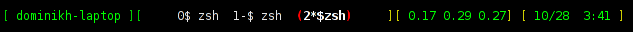
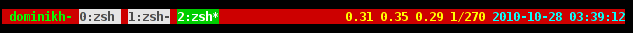
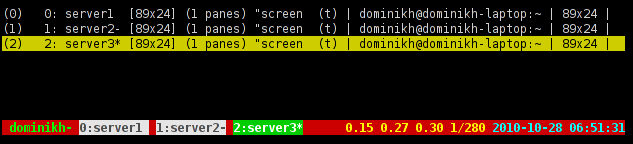
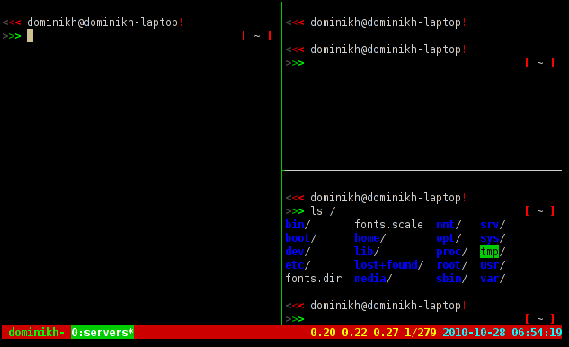

Send me an email!
Why You Should Try tmux Instead of screen
What screen is
If you’re reading this article, you probably already know what GNU Screen is: the most well-known terminal multiplexer in the world of Unix. If that doesn’t ring any bells, I recommend reading the Wikipedia article about GNU Screen before continuing with this article.
An Alternative
There are, however, also some other terminal multiplexers besides GNU screen, most notably tmux. While technically screen and tmux serve the same purpose – multiplexing terminals – their functionality and quality differ drastically.
The History of screen And tmux
Development of screen started in 1987; additions and fixes have been contributed ever since. On the one hand, that means that screen is a solid and proven piece of software; On the other hand, though, it also means that the codebase isn’t the cleanest one nor easy to understand. As a result of this, new additions are rare and development mostly concentrates on fixing existing bugs.
Tmux, on the other side, saw the light of day in late 2007. And because the developer was able to learn from screen’s mistakes while at the same time picking up existing and field-tested features, tmux has a solid and extensible code base – and it is actively developed by a very responsive developer.
Actual New Features
So, tmux has a better codebase and has (nearly, more on that later) all the features screen has – but chances are high that you are not interested in the code at all, so why should you care? Because tmux has a lot of features that screen has always been missing.
A Sensible Configuration Format
If there was only one shortcoming of screen that you were allowed to name, which one would it be? Right, the format of the configuration files…
Let’s look at a prominent example: a hardstatus (called “status line” in tmux) that contains the computer’s hostname, a list of all windows, the load average and a clock:
hardstatus alwayslastline '%{gk}[ %{G}%H %{g}][%= %{wk}%?%-Lw%?%{=b kR}(%{W}%n*%f%t%?(%u)%?%{=b kR})%{= kw}%?%+Lw%?%?%= %{y}][%{G} %l%{y}] %{y}[%{G} %m/%d %c %{y}]%{W}'

If I didn’t tell you what that option did, were you able to understand it, or more importantly, able to write it yourself? No, you probably wouldn’t. (If you, in fact, are able to: congratulations, and sincere condolences).
So, how would that look like in tmux? Here’s how:
set -g status-left ' #[fg=green,bold]#H#[default]'
set -g status-right '#[fg=yellow,bold]#(cut -d " " -f 1-4 /proc/loadavg)#[default] #[fg=cyan,bold]%Y-%m-%d %H:%M:%S#[default] '

Okay, so it’s easy to see where colors are being set (and yes, they do differ from the screen example, just ignore that. It would look the same for other colors, too), it’s kind of obvious what “#H” means (and the man pages of tmux have a complete list of all available codes), we instantly can see how the load average is displayed, and the clock format string should be obvious.
But wait, where’s the list of windows? That’s a built-in feature of tmux and thus doesn’t have to be set explicitly.
Of course there are a lot of more options, like the following one, which loads the emacs keymap:
set-window-option -g mode-keys emacs
Another major aspect of tmux’s config format is that it is basically a batch script: it is a simple list of commands that will be executed when tmux is started – they’re the same commands that you use in keybinds, the command prompt and shell scripts (more on that in a minute). If you want to always create two windows when a session is created, you can put this into your configuration:
new-window -n some_name
new-window -n another_name
Scriptable
Another major aspect of tmux is that nearly all commands can be
invoked from the command line, allowing complex scripts controlling
tmux sessions. tmux new-window, for example, would create a new
window. Splitting, moving and resizing windows, setting options and a
lot more actions are possible as well. Even the status bar can
dynamically be changed.
Emacs And Vi Keymaps
tmux supports two different keymaps, imitating either Emacs or vi. Those keymaps will be used in copy mode and the command prompt.
Mouse Support
Yeah, power users will smile at this feature, but novices might actually like it: panes can be selected using the mouse, and in copy mode, the mouse wheel is supported as well.
Menus
Nice to have, tmux has menus for selecting windows and sessions. 
Multiple buffers
Much like the kill ring in Emacs, tmux can keep more than one selection/piece of copied text in memory.
BSD License
Unlike GNU Screen, tmux is licensed under the simplified BSD license. Obviously this will please everyone who dislikes the GPL – but there’s even a real benefit from the choice in license: tmux is part of OpenBSD since version 4.6.
Differences to screen
Server Model
One speciality of tmux is that when creating your first session, it spawns a server which manages said session and all future sessions. In fact it is also possible to change the current session on the fly, using commands or even a fancy navigatable menu.
With tmux, it is not uncommon to have a set of different sessions (one for work, one for server management, and so on) and to quickly switch between them, effectively creating another level of grouping of windows.
Sessions can also be grouped, which means that they share the same set
of windows but have independent options and allow multiple users to
work with the same windows – much like screen -x, just a tad more
flexible.
Window Splitting
This one is probably the most confusing aspect of tmux, to people coming from screen. While splitting in screen means displaying multiple windows at once, in tmux it means splitting a window into multiple panes. It is, however, possible to take a pane and convert it into a window and vice versa. It is, however, not possible to display a window in a pane, without converting it to a pane.
Tmux does, however, natively support both horizontal and vertical splits, without the need for a custom patch, as is the case with screen. 
Additionally, tmux has presets for pane arrangements, eliminating the need for arranging splits by hand.
Missing Features
As mentioned earlier, there is in fact a feature missing in tmux: built-in serial and telnet support, while screen is able to directly connect to for example a serial null modem. Even more so, tmux will probably never include that feature, because the developer considers it bloat and says, that other, specialized tools should be used for that task instead.
Final words
I hope that this article is giving you enough reasons to at least try tmux. Of course there might be users who are just happy with screen or even users who need its support for serial consoles, but most of you should be able to at least give it a try. I can assure you that you will not regret it.
I also recommend reading the man pages of tmux, which are written in a very clear and readable way, and just playing with some of the options.
Links
- Wikipedia article about GNU Screen
- http://en.wikipedia.org/wiki/GNU_Screen
- tmux
- http://sourceforge.net/projects/tmux/
- man pages of tmux
- http://wisconsinlinux.org/tmux-manpage-from-cvs/tmux.1.txt